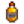

Rentabilidad de productos animales
No todos los procesamientos de productos animales resultarán en una ganancia. Esta página te mostrará la rentabilidad del procesamiento de productos animales en diferentes niveles, calidades, y profesiones de agricultura.
Tener en cuenta que los huevos regulares de gallinas siempre producen mayonesa de calidad regular, mientras que los huevos XXL siempre producen mayonesa de calidad oro. La mayonesa de pato, Mayonesa dinosaurio y la mayonesa sombría siempre son de calidad normal. Las calidades de los huevos no son factores que se toman en cuenta. Sin embargo, los huevos de avestruz producen 10 frascos de mayonesa, donde la calidad de la mayonesa será igual a la calidad del huevo de avestruz utilizado.
De manera similar, la leche de tamaño normal siempre produce queso de calidad normal, mientras que la leche XXL siempre produce queso de calidad oro. La leche de cabra de tamaño normal siempre produce queso de cabra de calidad normal, mientras que la leche de cabra XXL siempre produce queso de cabra de calidad oro. Las calidades de las leches no son factores que se toman en cuenta.
Cuando se usa lana de calidad en el telar, existe la probabilidad de recibir dos telas:
 Lana calidad plata = 10% de probabilidad.
Lana calidad plata = 10% de probabilidad. Lana calidad oro = 25% de probabilidad.
Lana calidad oro = 25% de probabilidad. Lana calidad iridio = 50% de probabilidad.
Lana calidad iridio = 50% de probabilidad.
Cuando procesar productos animales
Abajo hay una rápida referencia indicando cuándo procesar productos animales, sin contar el añejo en toneles. Envejecer queso o queso de cabra en un tonel casi siempre dará como resultado una ganancia. Esta tabla tampoco tiene en cuenta la posibilidad de obtener 2 tela de 1 lana. La obtención de 2 telas de 1 lana de mayor calidad nunca está garantizada y puede resultar en una pérdida neta en una lana individual si solo se produce 1 tela. Sin embargo, a la larga, la posibilidad de obtener tela adicional hace que el procesamiento de lana sea rentable en promedio para todos los niveles de calidad (la lana de iridio produce 1,5 telas en promedio, la de oro 1,25 y la de plata 1,1).
| Objeto | Sin profesión | ||
|---|---|---|---|
| Siempre | Siempre | Siempre | |
| Siempre | Siempre | Siempre | |
| Siempre | Siempre | Siempre | |
| Siempre | Siempre | Siempre | |
| Siempre | Siempre | Siempre | |
| Siempre | Siempre | Siempre | |
| Regular, Plata, y Oro | Regular, Plata, y Oro | Siempre | |
| Regular y Plata | Regular y Plata | Regular, Plata, y Oro | |
| Regular, Plata, y Oro | Regular, Plata, y Oro | Siempre | |
| Regular, Plata, y Oro | Regular, Plata, y Oro | Siempre | |
| Regular, Plata, y Oro | Regular, Plata, y Oro | Siempre | |
| Siempre | Regular, Plata, y Oro | Siempre | |
| Regular, Plata, y Oro | Regular, Plata, y Oro | Siempre |
Ganancia
La tabla de abajo muestra la ganancia obtenida (o pérdida) del procesamiento de productos animales desde sus respectivos equipamientos. Ganancias menos del 100%, lo cual es una pérdida, están sombreadas de rojo.
Aumento de ganancia = (Precio de venta de objeto procesado / Precio de venta) × 100
Tener en cuenta que puedes hacer clic sobre el encabezado de una columna para reordenar sus valores, luego Shift + Clic en una segunda columna para realizar un reorden secundario.
| Objeto | Calidad | Profesión | Precio de venta | Objeto procesado | Calidad de objeto procesado | Venta de objeto procesado | Aumento de ganancia |
|---|---|---|---|---|---|---|---|
| Regular | — | 50 | Regular | 190 | 380% | ||
| — | 62 | Regular | 190 | 306% | |||
| — | 75 | Regular | 190 | 253% | |||
| — | 100 | Regular | 190 | 190% | |||
| Regular | 60 | Regular | 228 | 380% | |||
| 75 | Regular | 228 | 304% | ||||
| 90 | Regular | 228 | 253% | ||||
| 120 | Regular | 228 | 190% | ||||
| Regular | 50 | Regular | 266 | 532% | |||
| 62 | Regular | 266 | 429% | ||||
| 75 | Regular | 266 | 355% | ||||
| 100 | Regular | 266 | 266% | ||||
| Regular | — | 95 | 285 | 300% | |||
| — | 118 | 285 | 242% | ||||
| — | 142 | 285 | 201% | ||||
| — | 190 | 285 | 150% | ||||
| Regular | 114 | 342 | 300% | ||||
| 142 | 342 | 241% | |||||
| 171 | 342 | 200% | |||||
| 228 | 342 | 150% | |||||
| Regular | 95 | 399 | 420% | ||||
| 118 | 399 | 338% | |||||
| 142 | 399 | 281% | |||||
| 190 | 399 | 210% | |||||
| Regular | — | 65 | Regular | 275 | 423% | ||
| — | 81 | Regular | 275 | 340% | |||
| — | 97 | Regular | 275 | 284% | |||
| — | 130 | Regular | 275 | 212% | |||
| Regular | 78 | Regular | 330 | 423% | |||
| 97 | Regular | 330 | 340% | ||||
| 117 | Regular | 330 | 282% | ||||
| 156 | Regular | 330 | 212% | ||||
| Regular | 65 | Regular | 385 | 592% | |||
| 81 | Regular | 385 | 475% | ||||
| 97 | Regular | 385 | 397% | ||||
| 130 | Regular | 385 | 296% | ||||
| Regular | — | 95 | Regular | 375 | 395% | ||
| — | 118 | Regular | 375 | 318% | |||
| — | 142 | Regular | 375 | 264% | |||
| — | 190 | Regular | 375 | 197% | |||
| Regular | 114 | Regular | 450 | 395% | |||
| 142 | Regular | 450 | 317% | ||||
| 171 | Regular | 450 | 263% | ||||
| 228 | Regular | 450 | 197% | ||||
| Regular | 95 | Regular | 525 | 553% | |||
| 118 | Regular | 525 | 445% | ||||
| 142 | Regular | 525 | 370% | ||||
| 190 | Regular | 525 | 276% | ||||
| Regular | — | 340 | Regular | 470 | 138% | ||
| — | 425 | Regular | 470 | 111% | |||
| — | 425 | Regular | 940 | 221% | |||
| — | 510 | Regular | 470 | 92% | |||
| — | 510 | Regular | 940 | 184% | |||
| — | 680 | Regular | 470 | 69% | |||
| — | 680 | Regular | 940 | 138% | |||
| Regular | 408 | Regular | 564 | 138% | |||
| Regular | 408 | Regular | 1128 | 276% | |||
| 510 | Regular | 564 | 111% | ||||
| 510 | Regular | 1128 | 221% | ||||
| 612 | Regular | 564 | 92% | ||||
| 612 | Regular | 1128 | 184% | ||||
| 816 | Regular | 564 | 69% | ||||
| 816 | Regular | 1128 | 138% | ||||
| Regular | 340 | Regular | 658 | 194% | |||
| Regular | 340 | Regular | 1316 | 387% | |||
| 425 | Regular | 658 | 155% | ||||
| 425 | Regular | 1316 | 310% | ||||
| 510 | Regular | 658 | 129% | ||||
| 510 | Regular | 1316 | 258% | ||||
| 680 | Regular | 658 | 97% | ||||
| 680 | Regular | 1316 | 194% | ||||
| Regular | — | 350 | Regular | 800 | 229% | ||
| — | 437 | Regular | 800 | 183% | |||
| — | 525 | Regular | 800 | 152% | |||
| — | 700 | Regular | 800 | 114% | |||
| Regular | 350 | Regular | 960 | 274% | |||
| 437 | Regular | 960 | 220% | ||||
| 525 | Regular | 960 | 183% | ||||
| 700 | Regular | 960 | 137% | ||||
| Regular | 350 | Regular | 1120 | 320% | |||
| 437 | Regular | 1120 | 256% | ||||
| 525 | Regular | 1120 | 213% | ||||
| 700 | Regular | 1120 | 160% | ||||
| Regular | — | 500 | 855 | 171% | |||
| — | 625 | 855 | 137% | ||||
| — | 750 | 855 | 114% | ||||
| — | 1000 | 855 | 86% | ||||
| Regular | 600 | 1026 | 171% | ||||
| 750 | 1026 | 137% | |||||
| 900 | 1026 | 114% | |||||
| 1200 | 1026 | 86% | |||||
| Regular | 500 | 1197 | 239% | ||||
| 625 | 1197 | 192% | |||||
| 750 | 1197 | 160% | |||||
| 1000 | 1197 | 120% | |||||
| Regular | — | 600 | Regular | 1900 | 317% | ||
| — | 750 | 2370 | 316% | ||||
| — | 900 | 2850 | 317% | ||||
| — | 1200 | 3800 | 317% | ||||
| Regular | 720 | Regular | 2280 | 317% | |||
| 900 | 2840 | 316% | |||||
| 1080 | 3420 | 317% | |||||
| 1440 | 4560 | 317% | |||||
| Regular | 600 | Regular | 2660 | 443% | |||
| 750 | 3310 | 441% | |||||
| 900 | 3990 | 443% | |||||
| 1200 | 5320 | 443% | |||||
| Regular | — | 125 | Regular | 230 | 184% | ||
| Regular | — | 125 | 287 | 230% | |||
| Regular | — | 125 | 345 | 276% | |||
| Regular | — | 125 | 460 | 368% | |||
| — | 156 | Regular | 230 | 147% | |||
| — | 156 | 287 | 184% | ||||
| — | 156 | 345 | 221% | ||||
| — | 156 | 460 | 295% | ||||
| — | 187 | Regular | 230 | 123% | |||
| — | 187 | 287 | 153% | ||||
| — | 187 | 345 | 184% | ||||
| — | 187 | 460 | 246% | ||||
| — | 250 | Regular | 230 | 92% | |||
| — | 250 | 287 | 115% | ||||
| — | 250 | 345 | 138% | ||||
| — | 250 | 460 | 184% | ||||
| Regular | 150 | Regular | 276 | 184% | |||
| Regular | 150 | 345 | 230% | ||||
| Regular | 150 | 414 | 276% | ||||
| Regular | 150 | 552 | 368% | ||||
| 187 | Regular | 276 | 148% | ||||
| 187 | 345 | 184% | |||||
| 187 | 414 | 221% | |||||
| 187 | 552 | 295% | |||||
| 225 | Regular | 276 | 123% | ||||
| 225 | 345 | 153% | |||||
| 225 | 414 | 184% | |||||
| 225 | 552 | 245% | |||||
| 300 | Regular | 276 | 92% | ||||
| 300 | 345 | 115% | |||||
| 300 | 414 | 138% | |||||
| 300 | 552 | 184% | |||||
| Regular | 125 | Regular | 322 | 258% | |||
| Regular | 125 | 402 | 322% | ||||
| Regular | 125 | 483 | 386% | ||||
| Regular | 125 | 644 | 515% | ||||
| 156 | Regular | 322 | 206% | ||||
| 156 | 402 | 258% | |||||
| 156 | 483 | 310% | |||||
| 156 | 644 | 413% | |||||
| 187 | Regular | 322 | 172% | ||||
| 187 | 402 | 215% | |||||
| 187 | 483 | 258% | |||||
| 187 | 644 | 344% | |||||
| 250 | Regular | 322 | 129% | ||||
| 250 | 402 | 161% | |||||
| 250 | 483 | 193% | |||||
| 250 | 644 | 258% | |||||
| Regular | — | 190 | 345 | 182% | |||
| Regular | — | 190 | 460 | 242% | |||
| — | 237 | 345 | 146% | ||||
| — | 237 | 460 | 194% | ||||
| — | 285 | 345 | 121% | ||||
| — | 285 | 460 | 161% | ||||
| — | 380 | 345 | 91% | ||||
| — | 380 | 460 | 121% | ||||
| Regular | 228 | 414 | 182% | ||||
| Regular | 228 | 552 | 242% | ||||
| 285 | 414 | 145% | |||||
| 285 | 552 | 194% | |||||
| 342 | 414 | 121% | |||||
| 342 | 552 | 161% | |||||
| 456 | 414 | 91% | |||||
| 456 | 552 | 121% | |||||
| Regular | 190 | 483 | 254% | ||||
| Regular | 190 | 644 | 339% | ||||
| 237 | 483 | 204% | |||||
| 237 | 644 | 272% | |||||
| 285 | 483 | 169% | |||||
| 285 | 644 | 226% | |||||
| 380 | 483 | 127% | |||||
| 380 | 644 | 169% | |||||
| Regular | — | 225 | Regular | 400 | 178% | ||
| Regular | — | 225 | 500 | 222% | |||
| Regular | — | 225 | 600 | 267% | |||
| Regular | — | 225 | 800 | 356% | |||
| — | 281 | Regular | 400 | 142% | |||
| — | 281 | 500 | 178% | ||||
| — | 281 | 600 | 214% | ||||
| — | 281 | 800 | 285% | ||||
| — | 337 | Regular | 400 | 119% | |||
| — | 337 | 500 | 148% | ||||
| — | 337 | 600 | 178% | ||||
| — | 337 | 800 | 237% | ||||
| — | 450 | Regular | 400 | 89% | |||
| — | 450 | 500 | 111% | ||||
| — | 450 | 600 | 133% | ||||
| — | 450 | 800 | 178% | ||||
| Regular | 270 | Regular | 480 | 178% | |||
| Regular | 270 | 600 | 222% | ||||
| Regular | 270 | 720 | 267% | ||||
| Regular | 270 | 960 | 356% | ||||
| 337 | Regular | 480 | 142% | ||||
| 337 | 600 | 178% | |||||
| 337 | 720 | 214% | |||||
| 337 | 960 | 285% | |||||
| 405 | Regular | 480 | 118% | ||||
| 405 | 600 | 148% | |||||
| 405 | 720 | 178% | |||||
| 405 | 960 | 237% | |||||
| 540 | Regular | 480 | 89% | ||||
| 540 | 600 | 111% | |||||
| 540 | 720 | 133% | |||||
| 540 | 960 | 178% | |||||
| Regular | 225 | Regular | 560 | 249% | |||
| Regular | 225 | 700 | 311% | ||||
| Regular | 225 | 840 | 373% | ||||
| Regular | 225 | 1120 | 498% | ||||
| 281 | Regular | 560 | 199% | ||||
| 281 | 700 | 249% | |||||
| 281 | 840 | 299% | |||||
| 281 | 1120 | 399% | |||||
| 337 | Regular | 560 | 166% | ||||
| 337 | 700 | 208% | |||||
| 337 | 840 | 249% | |||||
| 337 | 1120 | 332% | |||||
| 450 | Regular | 560 | 124% | ||||
| 450 | 700 | 156% | |||||
| 450 | 840 | 187% | |||||
| 450 | 1120 | 249% | |||||
| Regular | — | 345 | 600 | 174% | |||
| Regular | — | 345 | 800 | 232% | |||
| — | 431 | 600 | 139% | ||||
| — | 431 | 800 | 186% | ||||
| — | 517 | 600 | 116% | ||||
| — | 517 | 800 | 155% | ||||
| — | 690 | 600 | 97% | ||||
| — | 690 | 800 | 116% | ||||
| Regular | 414 | 720 | 174% | ||||
| Regular | 414 | 960 | 232% | ||||
| 517 | 720 | 139% | |||||
| 517 | 960 | 186% | |||||
| 621 | 720 | 116% | |||||
| 621 | 960 | 155% | |||||
| 828 | 720 | 87% | |||||
| 828 | 960 | 116% | |||||
| Regular | 345 | 840 | 243% | ||||
| Regular | 345 | 1120 | 325% | ||||
| 431 | 840 | 195% | |||||
| 431 | 1120 | 260% | |||||
| 517 | 840 | 162% | |||||
| 517 | 1120 | 217% | |||||
| 690 | 840 | 122% | |||||
| 690 | 1120 | 162% | |||||
| Regular | — | 625 |  Aceite de trufa | Regular | 1065 | 170% | |
| — | 781 | Aceite de trufa | Regular | 1065 | 136% | ||
| — | 937 | Aceite de trufa | Regular | 1065 | 114% | ||
| — | 1250 | Aceite de trufa | Regular | 1065 | 85% | ||
| Regular | 625 | Aceite de trufa | Regular | 1065 | 170% | ||
| 781 | Aceite de trufa | Regular | 1065 | 136% | |||
| 937 | Aceite de trufa | Regular | 1065 | 114% | |||
| 1250 | Aceite de trufa | Regular | 1065 | 85% | |||
| Regular | 625 | Aceite de trufa | Regular | 1491 | 239% | ||
| 781 | Aceite de trufa | Regular | 1491 | 191% | |||
| 937 | Aceite de trufa | Regular | 1491 | 159% | |||
| 1250 | Aceite de trufa | Regular | 1491 | 119% |